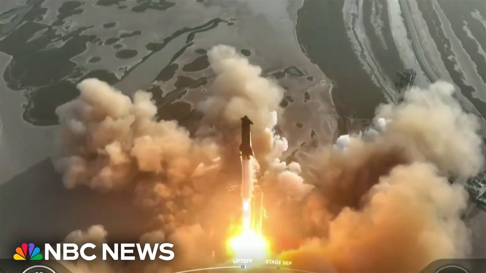

【SpaceX发射星际飞船第九次试飞】
Summary: The video captures SpaceX's ninth Starship test flight, featuring successful engine ignition, stage separation, and booster maneuvers, with detailed commentary on the mission's progress and challenges.
摘要： 视频记录了SpaceX星际飞船第九次试飞，展示了发动机成功点火、级间分离和助推器机动，并详细评论了任务进展与挑战。

⏱️ Estimated Reading Time: 14 min
Where my heart?
我的心在哪里？
[Music] pressure t of a sight from here.
[音乐] 从这里看到的压力景象。
We see it arced right over top of us.
我们看到它从我们头顶划过。
We see 33 out of 33 Raptor engines lit on Superheavy as it starts to ascend skyward.
我们看到超重型助推器的33台猛禽发动机全部点火，开始升空。
Coming up on maximum aerodynamic pressure.
即将达到最大气动压力。
Then only about a minute and a half until we get into hot staging.
然后只需大约一分半钟就会进入热分离阶段。
Wow, Dan, that was incredible.
哇，丹，太不可思议了。
We could feel the building shaking here.
我们能感觉到大楼在震动。
Feel the the vehicle's power.
感受到飞行器的力量。
And we're just about a minute away from shutting down those engines on the booster.
我们距离关闭助推器发动机只剩大约一分钟。
Again, this booster is flying for its second time today.
再次强调，这是该助推器今天的第二次飞行。
All right.
好的。
So, hot staging.
那么，热分离。
So Tom, as we're watching and listening that and 1 minute away uh seems to be a good next marker for us, but we heard them talking about 33 out of 33 Raptor engines were lit up there for this uncrrewed mission.
汤姆，我们正在观看和聆听，距离下一阶段还有1分钟，但我们听到他们提到这次无人任务中33台猛禽发动机全部点火。
When will we know or when will we be able to say this has been a success?
我们何时能知道或何时能说这次任务成功了？
Well, so far so good.
目前一切顺利。
Listen, here's the next critical phase.
听着，接下来是关键阶段。
They're going to separate out, right?
它们将要分离，对吧？
The booster stage separates from the upper stage and then they want to do a little bit of a flip.
助推器级将与上级分离，然后它们会进行小幅翻转。
Quite literally, the booster is going to do, you might call it a flip in a controlled direction and then starting its burn back down to Earth, down to the Gulf, where it will splash down in a hard splash landing.
确切地说，助推器将以可控方向翻转，然后开始返回地球的燃烧，最终在墨西哥湾硬着陆。
Meanwhile, the upper stage will go on into space and ultimately should land in the Indian Ocean.
与此同时，上级将继续进入太空，最终应在印度洋着陆。
Let's listen in.
让我们继续听。
Here we go.
开始了。
See those engines powering down?
看到那些发动机正在关闭了吗？
Booster engine cut off.
助推器发动机关闭。
So far so good.
目前一切顺利。
Ship ignition stage separation.
飞船点火级间分离。
Watch that flip.
看那个翻转。
See the flip.
看到翻转了。
You saw the booster.
你看到了助推器。
Incredible flip by Super Heavy booster.
超重型助推器的惊人翻转。
And you can see those six engines, those three engines on the ship ignited.
你可以看到飞船上的六台发动机，其中三台已经点火。
Six healthy raptors running on ship on it.
六台健康的猛禽发动机在飞船上运行。
Heading into space.
进入太空。
Take that engine view booster doing the boost back.
看看助推器进行返回燃烧的发动机视角。
Chris, how's it looking over there in Hawthorne?
克里斯，霍桑那边情况如何？
Man, it is looking chamber pressure is nominal.
老兄，燃烧室压力正常。
It is looking absolutely incredible here in Hawthorne.
霍桑这边看起来绝对不可思议。
As we said, six healthy engines on ship.
正如我们所说，飞船上有六台健康的发动机。
We've got 13 out of 13 engines on the booster.
助推器上的13台发动机全部运行。
Now down to those three, which is what we expect in the final moments of the boost back burn.
现在降至三台，这是我们在返回燃烧最后阶段预期的。
Now, as a reminder, we are not recovering the super heavy booster today.
提醒一下，我们今天不会回收超重型助推器。
We are instead going to do shut down.
相反，我们将关闭它。
And there we had a good shutdown of the boost back burn.
助推器返回燃烧已成功关闭。
Next up will be the jettison of that hot stage avionics power and telemetry nominal.
接下来将抛弃热分离阶段的航电设备，遥测数据正常。
Great call out there that everything looking nominal aboard the super heavy vehicle which is returning to Earth and we're going to be doing some experiments with it including a higher angle of attack re-entry uh as well as some engine tests as it gets closer to the Gulf.
很棒的报告，返回地球的超重型飞行器一切正常，我们将进行一些实验，包括更高攻角再入以及接近海湾时的发动机测试。
We are again because of these tests not recovering it.
由于这些测试，我们再次不回收它。
We are sending it to the Gulf on purpose to do those tests.
我们特意将它送往海湾进行这些测试。
But again, you see the booster on the left hand side of your screen.
但再次强调，你可以在屏幕左侧看到助推器。
You see ship with six healthy engines continuing its ascent to its planned suborbital trajectory.
你可以看到飞船搭载六台健康的发动机继续上升至计划的亚轨道轨迹。
Uh everything going very well so far for Starship's ninth flight.
星际飞船的第九次飞行目前一切顺利。
Now 4 minutes 15 seconds in.
现在已飞行4分15秒。
Great views from inside of the uh aft engine area of ship there.
飞船尾部发动机区域的视角很棒。
looking at those uh three sea level and three Raptor engines on the right hand side of your screen.
看看屏幕右侧的三台海平面和三台真空猛禽发动机。
The booster watchid because we don't need some of that liquid propellant couple attempts for SpaceX that propellant out to I'm not sure I would say further um because keep in mind they have successfully brought two boosters back to Earth before.
助推器被监视，因为SpaceX不需要某些液体推进剂，我不确定是否要进一步说明，因为请记住他们之前已成功回收过两个助推器。
Now in this case as they stressed they're not going to capture this booster.
这次他们强调不会捕获这个助推器。
They are purposely bringing it into the Gulf of Mexico because they're going to experiment with shutting down one or more of the Raptor engines as they do that.
他们特意将其送入墨西哥湾，因为将尝试关闭一台或多台猛禽发动机。
They want to see how the booster would perform in the event of a what they would call off nominal or not a good re-entry where they lose an engine or two.
他们想看看助推器在非标或不良再入（如失去一台或两台发动机）时的表现。
So that's why they're bringing it down into the Gulf.
这就是他们将其降落在海湾的原因。
But as you look at that view, you're looking at from the spaceship, the upper stage.
但从这个视角看，你看到的是飞船的上级。
And that is the stage that one day would carry astronauts like Eileen or cargo or fuel propellant onto space.
这是未来某天将搭载像艾琳这样的宇航员或货物或燃料进入太空的级段。
So now as that moves into space and eventually would splash down in the Indian Ocean.
现在它正进入太空，最终将在印度洋溅落。
That's the stage by the way that has broken apart the last two times that upper stage.
顺便说，这是前两次试飞中解体的上级。
So they want to see that that is able to remain healthy through the entire trip.
所以他们想看看它能否在整个旅程中保持完好。
Watch this.
看这个。
Here comes the booster coming back down to Earth.
助推器正返回地球。
phenomenal shot.
惊人的画面。
Then bring that down to three engines.
然后降至三台发动机。
As we talked about earlier, we will be intentionally shutting down.
如之前所说，我们将有意关闭。
We will be shutting down one of those three center engines intentionally to push the limits of the super heavy booster.
我们将有意关闭三台中心发动机中的一台，以测试超重型助推器的极限。
Chamber pressures nominal.
燃烧室压力正常。
That underscores this is a continuing to see six healthy engines on the ship, three sea level and three vacuum engines still ignited.
这强调飞船上仍有六台健康的发动机运行，三台海平面和三台真空发动机仍在点火。
As the super heavy booster is making its way back down to Earth, we can see those grid fins doing some heavy work.
超重型助推器返回地球时，我们可以看到格栅舵在努力工作。
Landing start up.
着陆启动。
Ignited for our landing burn.
着陆燃烧点火。
They say landing, but it's really a hard splash into the Gulf.
他们称之为着陆，但实际上是硬溅落在海湾。
Keep in mind, it may have ended with that landing burn.
请记住，它可能以着陆燃烧结束。
does look like we lost telemetry from the booster once we started into that landing burn that high angle of attack flight.
看起来我们在大攻角飞行进入着陆燃烧时失去了助推器的遥测信号。
So that was something that was really vital for us to get during this reuse.
因此这是我们在这次重复使用中非常需要的数据。
So what they want to do here, Ellison, they want to be able to reuse both portions of the ship in the future, right?
艾莉森，他们未来希望重复使用飞船的两个部分，对吧？
Both the booster and the upper stage.
包括助推器和上级。
And then as always, the Starship avionics team, the techs, I think we just heard the booster.
然后一如既往，星际飞船航电团队和技术人员，我想我们刚刚听到了助推器的声音。
Uh, but all right, we got about a minute left into this burn.
好吧，我们还有大约一分钟的燃烧时间。
All eyes definitely on ship as we get through the final stages into its ascent.
在飞船进入上升最后阶段时，所有人的目光都集中在飞船上。
We're expecting it to start to cut those engines off in about 45 seconds.
预计它将在约45秒后开始关闭发动机。
Terminal guidance.
末端制导。
Hey Ellison, you know it's also worth making the point nobody else is doing this.
嘿艾莉森，值得一提的是没有其他国家在做这件事。
No other country.
没有其他国家。
30 seconds to go has created has created such a program that is so far advanced on the engineering the final stages of this China hasn't done this Russia hasn't done that the UAE Japan the the SpaceX is so far beyond anybody else as it relates to engineering so we do the pushing the envelope those three have shut down successfully sea level still running ship Benjen cut off [Applause] ship engine the three most beautiful words in the English language and great call out that we had nominal insertion that means it's in its planned space orbit for now an incredible flight test so far today.
还剩30秒，创造了如此先进的工程项目，中国、俄罗斯、阿联酋、日本都未做到，SpaceX在工程上远超任何国家，我们正在突破极限，三台发动机已成功关闭，海平面发动机仍在运行，飞船发动机关闭[掌声]，这是英语中最美的三个词，很棒的报告，我们实现了标称入轨，意味着它现在处于计划轨道，今天的飞行测试非常成功。
We refle the very first time in nine test flights.
我们在九次试飞中首次做到。
Tom, as we wrap here and Eileen saying to you, could you both just give us a sense of your final thoughts watching this?
汤姆，总结时艾琳对你说，你们能否分享一下观看这次飞行的最终感想？
Let me defer to Eileene, Commander Collins is the real expert here.
让艾琳来说吧，柯林斯指挥官是真正的专家。
Eileen.
艾琳。
Yeah.
是的。
Um, I would say first of all, this was an extremely successful test up to this point.
首先，到目前为止这是一次非常成功的测试。
Now, obviously the first stage, Tom explained, all that uh went fine, but I personally was more concerned with the second stage, which is what you're looking at right now in the screen.
显然第一级，如汤姆所说一切顺利，但我个人更关注第二级，也就是屏幕上现在看到的。
That was the one that uh did not start properly the last two times and broke up and came down in debris over the Turks and Caos.
这是前两次未能正常启动并解体、碎片落在特克斯和凯科斯群岛的级段。
And that was uh not that was not a very good thing.
那并不是好事。
And we were all hoping that this time it would make it to orbit and it did.
我们都希望这次它能进入轨道，它做到了。
And so I'm really happy.
所以我非常高兴。
Keep in mind that this is the equipment that will be taking our astronauts back to the moon and onto Mars.
请记住，这是将带我们的宇航员重返月球和前往火星的设备。
This second stage Starship has to work.
这第二级星际飞船必须成功。
So, we're all pulling for SpaceX.
所以我们都在支持SpaceX。
Great partnership with NASA and our astronauts.
与NASA和宇航员的伟大合作。
And good for them.
他们做得很好。
I give them a hand today.
今天我为他们鼓掌。
Eileen, I'm I'm curious.
艾琳，我很好奇。
Does it make you wish you were a junior astronaut again and one day you'd be flying this thing?
这是否让你希望自己重回年轻宇航员时代，有朝一日能驾驶它？
Well, I would love to go to the moon and onto Mars.
嗯，我很想去月球和火星。
You know, maybe someday they'll ask, you know, we'd like an old lady to go.
也许有一天他们会邀请一位老太太去。
And in that case, obviously, you we would love to watch you do it again.
那样的话，我们当然很乐意再看你飞一次。
Eileen is self-deprecating.
艾琳很谦虚。
She's not so old, and she is truly one of the heroes of the space program.
她并不老，而且确实是太空计划的英雄之一。
Thanks for watching.
感谢观看。
Stay updated about breaking news and top stories on the NBC News app or follow us on social media.
请通过NBC新闻应用或社交媒体关注最新突发新闻和头条故事。